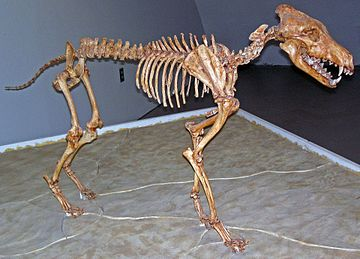

The Dire Wolf is an extinct ancestor of modern wolves and dogs. It lived in the Americas during the Late Pleistocence and Early Holocence epochs. The Dire Wolf had the strongest bite force of any Canis species, and is thought to have used it for hunting larger prey. It most likely roamed in packs like most modern wolves and hunted horses, ground sloths, mastadons, bison, and camels. Most of the remains of dire wolves were found in tar pits, after they had become entrapped while going for the herbavores that had become stuck in the tar. When looking through the tar pits the most common predator found in them was the Dire Wolf. This tells that they were top predators as they could defend the food that was in the pits, and gives evidence that they traveled in packs.
The Dire Wolf went extinct during the 'American Megafaunal extinction event' around 12,700 YBP. Most larger animals died out at that time. The reason they died is likely due to their megaherbavore prey dying out due to climate change or something else. The reason the megaherbavores died out is still debated.